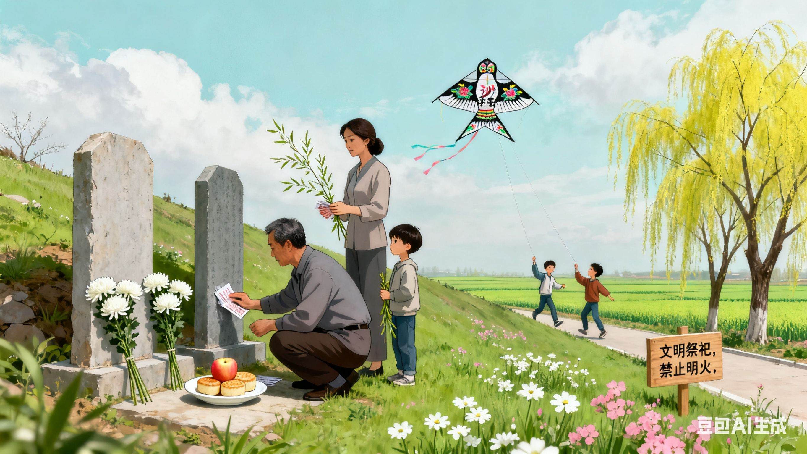

清明节：慎终追远，踏青迎春
清明节在公历 4 月 5 日前后，兼具自然与人文两大内涵，既是二十四节气之一，也是传统节日，更是中华民族缅怀先烈、祭奠祖先的重要日子。 清明节的起源与春秋时期的 “寒食节” 有关。相传，晋文公重耳流亡期间，随臣介子推曾 “割股奉君”。重耳归国后成为君主，想封赏介子推，介子推却带着母亲隐居绵山。晋文公为逼介子推出山，下令烧山，结果介子推与母亲被烧死在山中。为了纪念介子推，晋文公下令将绵山改为 “介山”，并规定在介子推遇难的这一天，禁火寒食，这便是寒食节的由来。后来，寒食节与清明节逐渐融合，形成了如今的清明节习俗。 清明节的核心习俗是 “扫墓祭祖”。在这一天，人们会带着鲜花、水果、糕点等祭品，前往祖先的墓地，清除墓地周围的杂草，擦拭墓碑，向祖先敬献祭品，焚香烧纸，跪拜祈福，表达对祖先的缅怀与敬意。随着时代的发展，越来越多的人开始采用绿色、环保的祭祀方式，如鲜花祭祀、网络祭祀等，既传承了孝道文化，又保护了环境。 除了扫墓祭祖，清明节还有 “踏青” 的习俗。此时正值春回大地、万物复苏，草木吐绿，百花盛开，人们会走出家门，到郊外欣赏春天的美景，呼吸新鲜空气，感受春天的生机与活力。此外，清明节还有插柳、放风筝等习俗。插柳是因为柳树生命力顽强，象征着生机与希望，人们会将柳枝插在门上或编成柳帽戴在头上；放风筝则有 “放晦气” 的寓意，人们会将风筝放飞后剪断引线，让风筝带着一年的烦恼与晦气随风飘走，祈求平安健康。